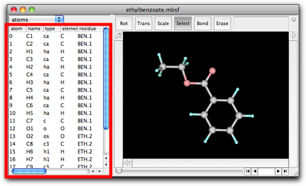
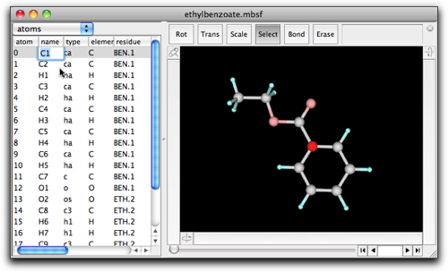
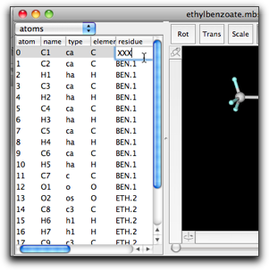
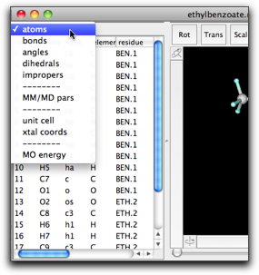
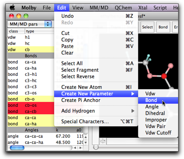

Step Five: Edit a Molecule: Using a Property Table
1. The Property Table of a Molecule
A molecule has many properties. It has a set of atoms and bonds. An atom has a name, an atom type, an element, a weight (which can be derived from the element), a charge, coordinates, and so on. According to the custom in the biomolecular modeling, atoms are grouped in "residues." It also has a set of parameters used in molecular mechanics. Molby also has a limited support for quantum chemical calculations. In relation to that, a molecule in Molby can retain extra information such as MO coefficients.
Many of these information are accessible via the property table. The table is on the left side of the model window.

The table now shows the properties of each atom, namely its name, type, element, "residue" name and index, coordinates and partial charge. The property can be edited by double-clicking on the text.

When return (enter) or tab key is pressed, the edited value is finalized, and editing will continue on another cell. Pressing return, shift-return, tab, or shift-tab should cause editing of the bottom, above, right, or left cell, respectively. If you want to finish editing, use option- (or alt-) return key combination.
Several points are worth mentioning here.
(1) The atom index (the leftmost column) cannot be edited. If you want to change the order of the atoms, try using a "drag-and-drop" feature, as shown in the figure below.


(2) The residue column shows the residue name and index separated by a period. Manual editing of this cell may lead to a surprising result. For example, if you change the residue name of atom 0 from "RES" to "XXX", all atoms having residue index "1" will also have the new residue name "XXX".


This behavior is based on the principle that all residue names and indices should be consistent, i.e. the atoms having the same residue index should have the same residue name. This is sometimes convenient, but in many cases it causes confusion.
A more recommended way to change the residue name and index is to use the menu command "Assign Residue...", in the "Script" menu, after selecting atoms you want to assign one residue name and index.


2. The Bond/Angle/Dihedral/Improper Table
The property table can also show other information. The type of information can be selected at the popup menu.

The bond, angle, dihedral, and improper tables show the indices, names, and types of the constituent atoms. In addition, the quantities (bond lengths, angles, etc.) and the molecular mechanics parameters (only after MM/MD calculation is performed) are also shown.

The bonds, angles, etc. are not editable in the property table. At present, the only way to create/delete bonds from GUI is to use the mouse operation "Bond" or "Erase".
3. The Parameter Table
The parameter table shows the molecular mechanics parameters in one table.

The parameters are grouped in several classes, namely "VDWs", "Bonds", "Angles", "Dihedrals", "Impropers", and "VDW Pairs".
The "VDWs" parameters are for the van der Waals nonbonding interaction, described by "eps" (the energy at the potential minimum in kcal/mol), "r" (the van der Waals radius in Å, which is half of the interatomic distance at the equilibrium state), "eps14", "r14" (eps and r for the pair of atoms separated by exactly three bonds. In many applications, the same parameters with the ordinary pair are used with a specific factor multiplied), "atomNo" (the atomic number), "weight" (the atomic weight). The last two are usually overridden by the atom parameters.
The "Bonds" parameters consist of "k" (the force constant in kcal/mol/Å2) and "r0" (the equilibrium bond length). The "Angles" parameters consist of "k" (the force constant in kcal/mol/radian2) and "a0" (the equilibrium bond angle). The "Dihedrals" and "Impropers" parameters consist of "k" (the force constant in kcal/mol/radian2), "period" (the periodicity), and "phi0" (the equilibrium torsion angle in degree). The "VDW Pairs" parameters are (rarely) used to describe pair-specific van der Waals interactions, and consist of "eps", "r", "eps14", and "r14".
There is another important property for each parameter, that is, whether the parameter is taken from the "global" source (i.e. not specific to this molecule), or it is "local" (specific to this molecule), or "undefined". This property is shown by the color of the row. The global parameters are shown in white cells, the local ones in pale yellow, and the undefined ones in red.

You can edit the parameters (although you need to be familiar with MM parameters and to know what you are doing!), but only if they are "local" or "undefined" parameters. The "global" parameters cannot be edited because it may be also used in other molecules, where the edited parameters may not be appropriate. If you want to modify some parameters but they are "global", then you can make them "local" by copying the parameters and the pasting.

Another way to create a "local" parameter is to use the "Create New Parameter" menu command in the Edit menu. You can choose the parameter type in the submenu.


If some parameters are not to be used for calculation, you can "cut" the parameters from the table. This feature is useful when you have many duplicated parameters having different force constants. (In actual calculation, the parameter appearing later in the table will be used.)